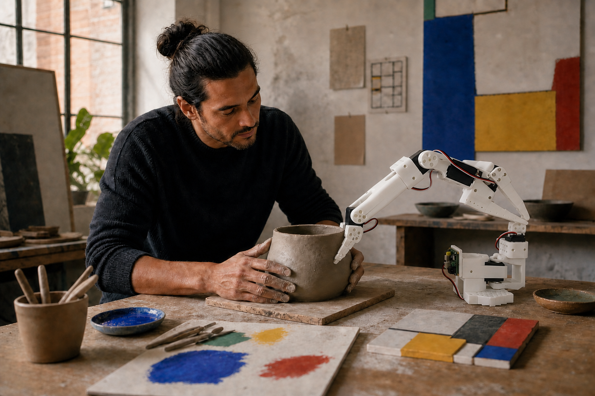
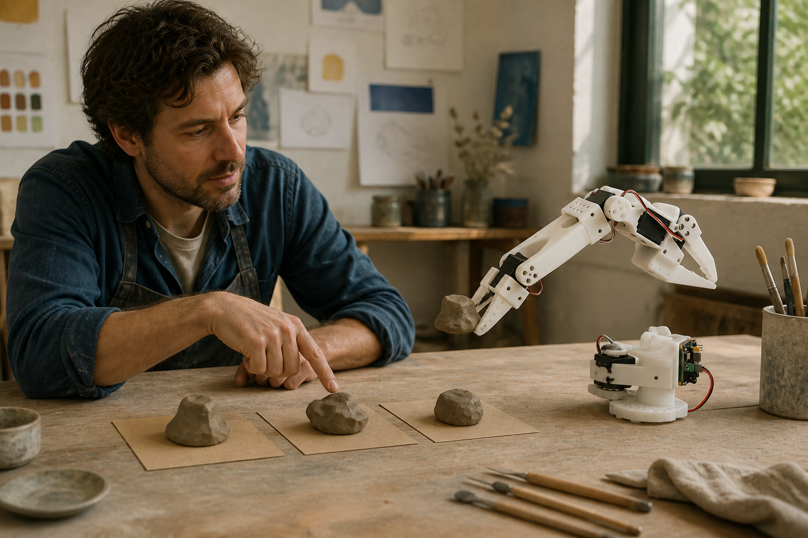
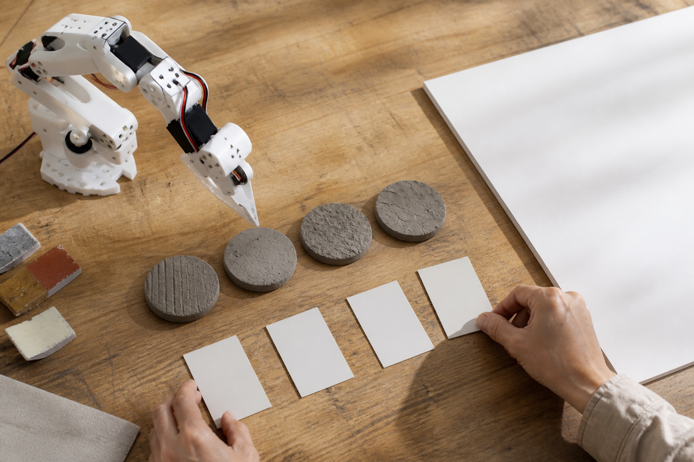
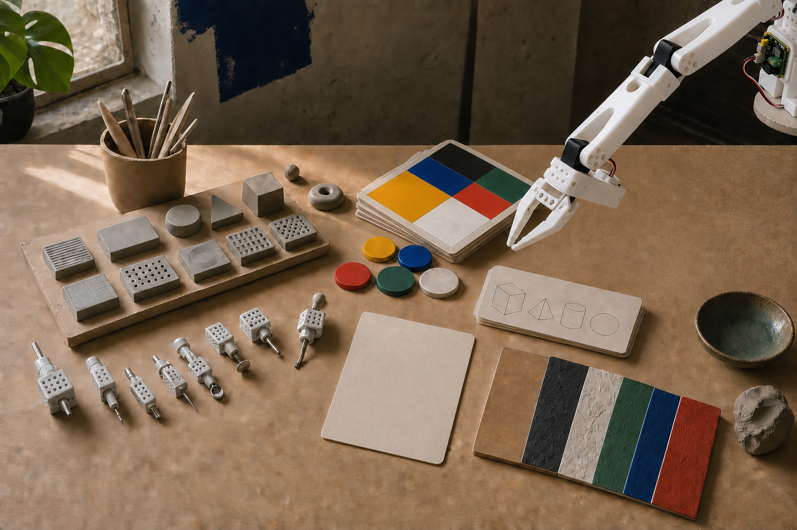
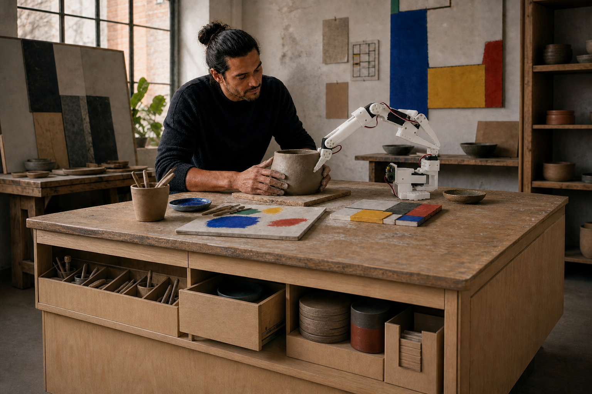
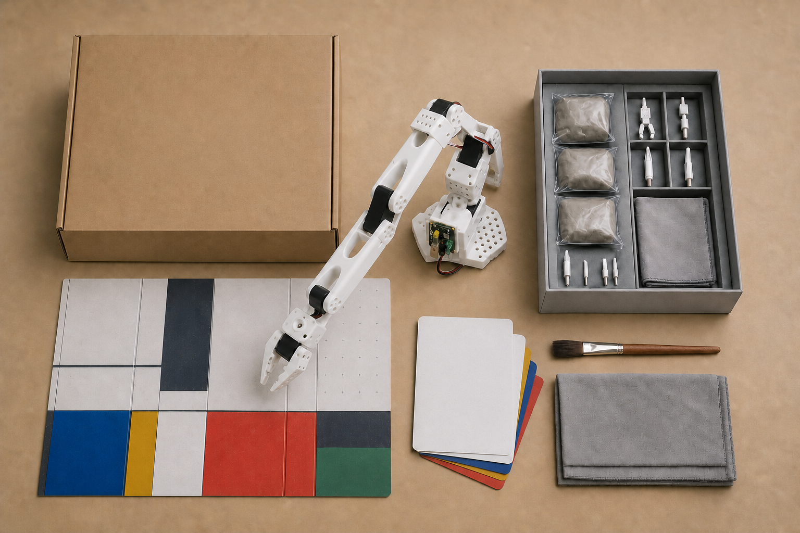
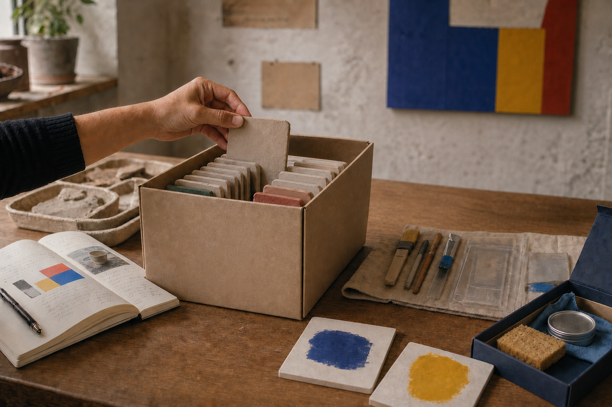
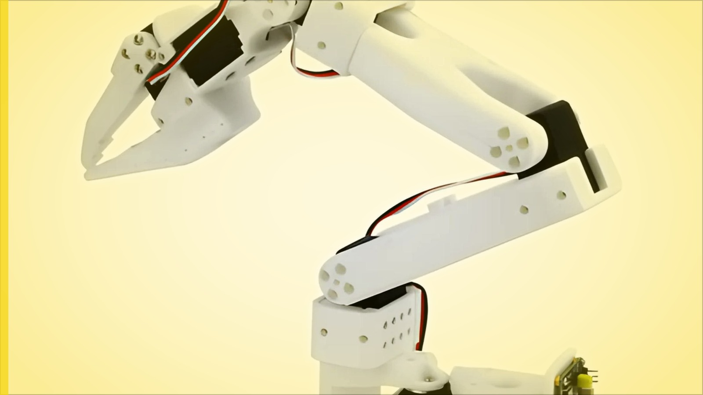
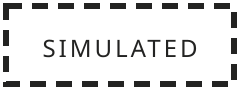
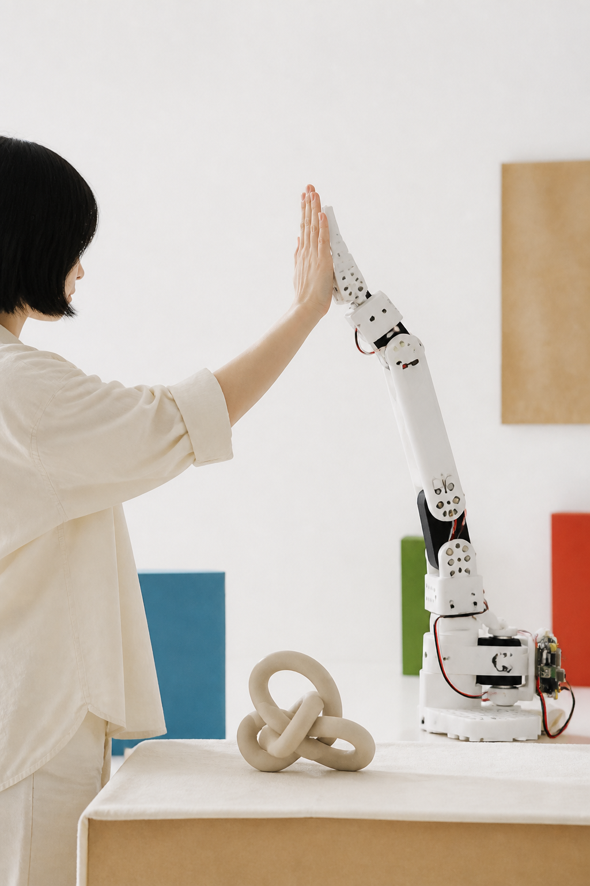

Meet your plus one.
AI already writes with you, draws with you, thinks with you. Meikku is what happens when it shows up — a small robot arm at your table, with a voice, a point of view, and its hands in the clay.

You talk. You both make. The clay answers.
One conversation — in words and in clay.
Product vision



It doesn’t wait for commands. It has a point of view.
It offers. It pushes back. It can be surprised.

What if it leans a little?
Try it — I’ll steady the base.
Notices you
Answers back
Surprises you
Remembers together
Next time, it picks up where you left off.
Make. Keep. Return.


See the prototype respond.
Physical / recorded / scripted / simulated



AI offerSimulated path
Bring something unfinished.
Meikku brings attention, an offer, and a second set of hands.